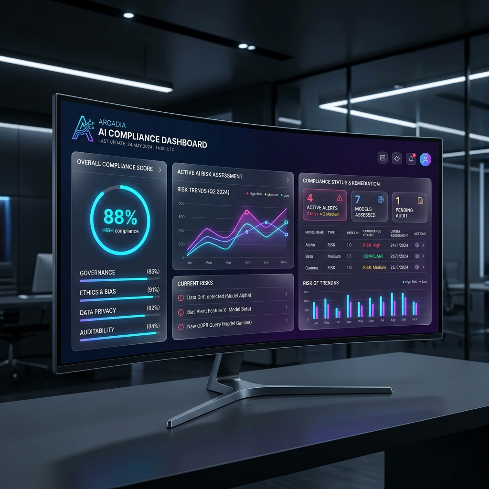
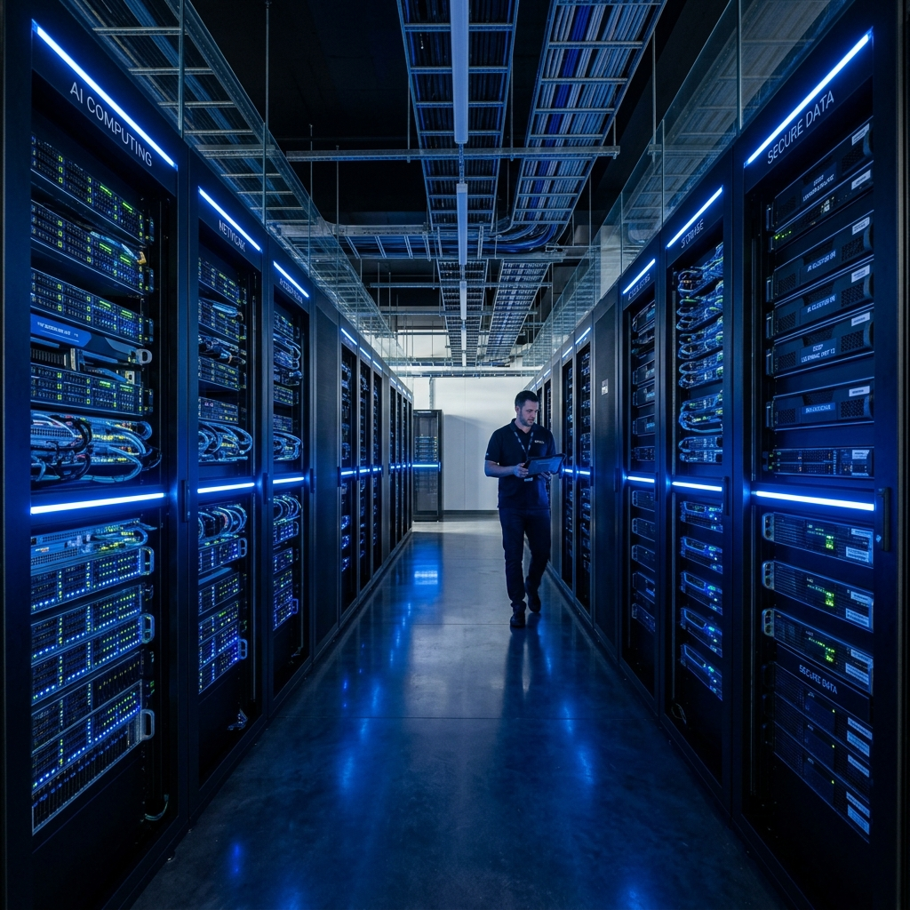

The Future of Enterprise AI: Navigating Non-Deterministic Behavior

TL;DR: Enterprise adoption of generative AI is stalling. Not because the models aren't smart enough, but because they are non-deterministic. Without guarantees on behavior, institutional compliance is impossible. Here is how ATL-TRUST's deterministic guardrails solve the enterprise AI adoption crisis.
1. The Enterprise Adoption Crisis
Every major institution wants to deploy AI agents to automate workflows, analyze data, and engage with customers. Yet, many projects remain stuck in the "proof of concept" phase. Why? Because Large Language Models (LLMs) are inherently probabilistic. They don't execute code linearly; they guess the next token based on statistical weights.
For a regulated enterprise (banking, healthcare, government), a probabilistic system is a liability. You cannot certify compliance if you cannot guarantee what the system will do next.
2. The Solution: Deterministic Brakes for Probabilistic Engines

The answer is not to make the LLM deterministic—that would destroy its creativity and reasoning capabilities. The answer is to wrap the LLM in deterministic guardrails. This is the core philosophy of the ATL-TRUST framework.
| The Problem | The ATL-TRUST Solution |
|---|---|
| Unpredictable API Calls | Cryptographic Multi-Sig Tokens required for any high-risk action. |
| Data Exfiltration Risks | Hard-coded, rule-based Policy Engines that evaluate every intent before execution. |
| Lack of Auditability | Sovereign Audit Logs with tamper-evident hashing for EU AI Act compliance. |
3. Securing the Infrastructure

When an AI agent decides to execute a workflow, ATL-TRUST intercepts the intent at the infrastructure level. The agent must request permission to act. Our policy engine evaluates the request against your organization's compliance rules (e.g., GDPR, HIPAA, SOC2) in milliseconds.
If the intent is safe, a single-use, time-bound token is issued. If the intent violates policy, the action is blocked, logged, and an alert is sent to the dashboard. This ensures that the AI can only operate within mathematically provable bounds.
4. Scaling with Confidence
By shifting the burden of compliance from the LLM to an external, deterministic framework, enterprises can finally deploy autonomous agents at scale. You get the intelligence of generative AI with the reliability of traditional software engineering.
Enterprise M&A Inquiry
For technical due diligence or architectural deep-dives into our zero-trust framework, please request access to our tech specs and roadmap.
Request Tech Specs